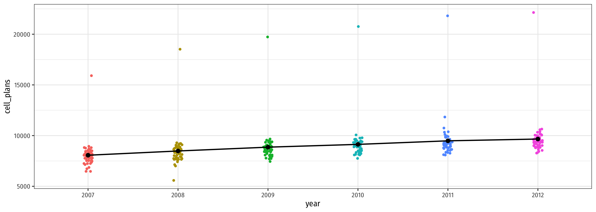

5.1 — Fixed Effects
ECON 480 • Econometrics • Fall 2022
Dr. Ryan Safner
Associate Professor of Economics
safner@hood.edu
ryansafner/metricsF22
metricsF22.classes.ryansafner.com
Contents
Panel Data
Pooled Regression
Fixed Effects Model
Least Squares Dummy Variable Approach
De-Meaned Approach
Two-Way Fixed Effects
Panel Data
Types of Data I
- Cross-sectional data: compare different individual \(i\)’s at same time \(\bar{t}\)
Types of Data I
- Cross-sectional data: compare different individual \(i\)’s at same time \(\bar{t}\)
- Time-series data: track same individual \(\bar{i}\) over different times \(t\)
Types of Data II
- Cross-sectional data: compare different individual \(i\)’s at same time \(\bar{t}\)
\[\hat{Y}_{\color{red}{i}} = \beta_0 + \beta_1 X_{\color{red}{i}} + u_{\color{red}{i}}\]
- Time-series data: track same individual \(\bar{i}\) over different times \(t\)
\[\hat{Y}_{\color{blue}{t}} = \beta_0 + \beta_1 X_{\color{blue}{t}} + u_{\color{blue}{t}}\]
- Panel data: combines these dimensions: compare all individual \(i\)’s over all time \(t\)’s
Panel Data I
Panel Data II
- Panel or Longitudinal data contains
- repeated observations \((t)\)
- on multiple individuals \((i)\)
Panel Data II
- Panel or Longitudinal data contains
- repeated observations \((t)\)
- on multiple individuals \((i)\)
- Thus, our regression equation looks like:
\[\hat{Y}_{\color{red}{i}\color{blue}{t}} = \beta_0 + \beta_1 X_{\color{red}{i}\color{blue}{t}} + u_{\color{red}{i}\color{blue}{t}}\]
for individual \(i\) in time \(t\).
Panel Data: Our Motivating Example
Example
Do cell phones cause more traffic fatalities?
- No measure of cell phones used while driving
cell_plansas a proxy for cell phone usage
- U.S. State-level data over 6 years
The Data I
Rows: 306
Columns: 8
$ year <fct> 2007, 2007, 2007, 2007, 2007, 2007, 2007, 2007, 2007, 20…
$ state <fct> Alabama, Alaska, Arizona, Arkansas, California, Colorado…
$ urban_percent <dbl> 30, 55, 45, 21, 54, 34, 84, 31, 100, 53, 39, 45, 11, 56,…
$ cell_plans <dbl> 8135.525, 6730.282, 7572.465, 8071.125, 8821.933, 8162.0…
$ cell_ban <fct> 0, 0, 0, 0, 0, 0, 1, 0, 1, 0, 0, 0, 0, 0, 0, 0, 0, 0, 0,…
$ text_ban <fct> 0, 0, 0, 0, 0, 0, 1, 0, 1, 0, 0, 0, 0, 0, 0, 0, 0, 0, 0,…
$ deaths <dbl> 18.075232, 16.301184, 16.930578, 19.595430, 12.104340, 1…
$ year_num <dbl> 2007, 2007, 2007, 2007, 2007, 2007, 2007, 2007, 2007, 20…The Data II
The Data III
The Data IV
Pooled Regression
Pooled Regression I
- What if we just ran a standard regression:
\[\hat{Y_{it}}=\beta_0+\beta_1X_{it}+u_{it}\]
\(N\) number of \(i\) groups (e.g. U.S. States)
\(T\) number of \(t\) periods (e.g. years)
This is a pooled regression model: treats all observations as independent
Pooled Regression II
Pooled Regression III
Pooled Regression III

Recall: Assumptions about Errors
- We make 4 critical assumptions about \(u\):
- The expected value of the errors is 0
\[\mathbb{E}[u]=0\]
- The variance of the errors over \(X\) is constant:
\[var(u|X)=\sigma^2_{u}\]
- Errors are not correlated across observations:
\[cor(u_i,u_j)=0 \quad \forall i \neq j\]
- There is no correlation between \(X\) and the error term:
\[cor(X, u)=0 \text{ or } E[u|X]=0\]

Biases of Pooled Regression
\[\hat{Y_{it}}=\beta_0+\beta_1X_{it}+u_{it}\]
Assumption 3: \(cor(u_i,u_j)=0 \quad \forall \, i \neq j\)
Pooled regression model is biased because it ignores:
- Multiple observations from same group \(i\)
- Multiple observations from same time \(t\)
Thus, errors are serially or auto-correlated; \(cor(u_i, u_j) \neq 0\) within same \(i\) and within same \(t\)
Biases of Pooled Regression: Our Example
\[\widehat{\text{Deaths}_{it}}=\beta_0+\beta_1 \, \text{Cell Phones}_{it}+u_{it}\]
- Multiple observations come from same state \(i\)
- Probably similarities among \(u_t\) for obs in same state \(i\)
- Residuals on observations from same state are likely correlated
\[cor(u_{\text{MD, } 2008}, u_{\text{MD, } 2009}) \neq 0\]
- Multiple observations come from same year \(t\)
- Probably similarities among \(u_i\) for obs in same year \(t\)
- Residuals on observations from same year are likely correlated
\[cor(u_{\text{MD, } 2008}, u_{\text{VA, } 2008}) \neq 0\]
Example: Consider Just 5 States
Code
phones %>%
filter(state %in% c("District of Columbia",
"Maryland", "Texas",
"California", "Kansas")) %>%
ggplot()+
aes(x = cell_plans,
y = deaths,
color = state)+
geom_point()+
geom_smooth(method = "lm")+
labs(x = "Cell Phones Per 10,000 People",
y = "Deaths Per Billion Miles Driven",
color = NULL)+
theme_bw(base_family = "Fira Sans Condensed",
base_size = 14)+
theme(legend.position = "top")Example: Consider Just 5 States
Code
phones %>%
filter(state %in% c("District of Columbia",
"Maryland", "Texas",
"California", "Kansas")) %>%
ggplot()+
aes(x = cell_plans,
y = deaths,
color = state)+
geom_point()+
geom_smooth(method = "lm")+
labs(x = "Cell Phones Per 10,000 People",
y = "Deaths Per Billion Miles Driven",
color = NULL)+
theme_bw(base_family = "Fira Sans Condensed",
base_size = 14)+
theme(legend.position = "top")+
facet_wrap(~state, ncol = 3)Example: Consider All 51 States
Code
ggplot(data = phones)+
aes(x = cell_plans,
y = deaths,
color = state)+
geom_point()+
geom_smooth(method = "lm")+
labs(x = "Cell Phones Per 10,000 People",
y = "Deaths Per Billion Miles Driven",
color = NULL)+
theme_bw(base_family = "Fira Sans Condensed",
base_size = 14)+
theme(legend.position = "none")+
facet_wrap(~state, ncol = 7)The Bias in our Pooled Regression
\[\widehat{\text{Deaths}_{it}}=\beta_0+\beta_1 \, \text{Cell Phones}_{it}+\text{u}_{it}\]
- \(\text{Cell Phones}_{it}\) is endogenous:
\[cor(\text{u}_{it}, \text{Cell Phones}_{it}) \neq 0 \quad \quad E[\text{u}_{it}|\text{Cell Phones}_{it}] \neq 0\]
- Things in \(u_{it}\) correlated with \(\text{Cell phones}_{it}\):
- infrastructure spending, population, urban vs. rural, more/less cautious citizens, cultural attitudes towards driving, texting, etc
- A lot of these things vary systematically by State!
- \(cor(\text{u}_{it_1}, \text{u}_{it_2})\neq 0\)
- Error in State \(i\) during \(t_1\) correlates with error in State \(i\) during \(t_2\)
- things in State \(i\) that don’t change over time
- \(cor(\text{u}_{it_1}, \text{u}_{it_2})\neq 0\)
Fixed Effects Model
Fixed Effects: DAG I
A simple pooled model likely contains lots of omitted variable bias
Many (often unobservable) factors that determine both Phones & Deaths
- Culture, infrastructure, population, geography, institutions, etc
Fixed Effects: DAG II
A simple pooled model likely contains lots of omitted variable bias
Many (often unobservable) factors that determine both Phones & Deaths
- Culture, infrastructure, population, geography, institutions, etc
But the beauty of this is that most of these factors systematically vary by U.S. State and are stable over time!
We can simply “control for State” to safely remove the influence of all of these factors!
Fixed Effects: Decomposing \(\text{u}_{it}\)
- Much of the endogeneity in \(X_{it}\) can be explained by systematic differences across \(i\) (groups)
- Exploit the systematic variation across groups with a fixed effects model
- Decompose the model error term into two parts:
\[\text{u}_{it} = \alpha_i + \epsilon_{it}\]
Fixed Effects: \(\alpha_i\)
- Decompose the model error term into two parts:
\[\text{u}_{it} = \color{#6A5ACD}{\alpha_i} + \epsilon_{it}\]
- \(\color{#6A5ACD}{\alpha_i}\) are group-specific fixed effects
- group \(i\) tends to have higher or lower \(\hat{Y}\) than other groups given regressor(s) \(X_{it}\)
- estimate a separate \(\alpha_i\) (“intercept”) for each group \(i\)
- essentially, estimate a separate constant (intercept) for each group
- notice this is stable over time within each group (subscript only \(i\), no \(t)\)
- This includes all factors that do not change within group i over time
Fixed Effects: \(\epsilon_{it}\)
- Decompose the model error term into two parts:
\[\text{u}_{it} = \color{#6A5ACD}{\alpha_i} + \color{#D7250E}{\epsilon_{it}}\]
- \(\color{#D7250E}{\epsilon_{it}}\) is the remaining random error
- As usual in OLS, assume the 4 typical assumptions about this error:
- \(E[\epsilon_{it}]=0\), \(var[\epsilon_{it}]=\sigma^2_{\epsilon}\), \(cor(\epsilon_{it}, \epsilon_{jt})=0\), \(cor(\epsilon_{it}, X_{it})=0\)
- As usual in OLS, assume the 4 typical assumptions about this error:
- \(\color{#D7250E}{\epsilon_{it}}\) includes all other factors affecting \(Y_{it}\) not contained in group effect \(\alpha_i\)
- i.e. differences within each group that change over time
- Be careful: \(X_{it}\) can still be endogenous due to other factors!
- \(cor(X_{it}, \epsilon_{it}) \neq 0\)
Fixed Effects: New Regression Equation
\[\hat{Y}_{it} = \beta_0+\beta_1 X_{it} +\color{#6A5ACD}{\alpha_i} + \color{#D7250E}{\epsilon_{it}}\]
We’ve pulled \(\color{#6A5ACD}{\alpha_i}\) out of the original error term into the regression
Essentially we’ll estimate an intercept for each group (minus one, which is \(\beta_0)\)
- avoiding the dummy variable trap
Must have multiple observations (over time) for each group (i.e. panel data)
Fixed Effects: Our Example
\[\widehat{\text{Deaths}}_{it} = \beta_0+\beta_1 \text{Cell phones}_{it} +\color{#6A5ACD}{\alpha_i}+ \color{#D7250E}{\epsilon_{it}}\]
- \(\color{#6A5ACD}{\alpha_i}\) is the State fixed effect
- Captures everything unique about each state \(i\) that does not change over time
- culture, institutions, history, geography, climate, etc!
- Captures everything unique about each state \(i\) that does not change over time
- There could still be factors in \(\color{#D7250E}{\epsilon_{it}}\) that are correlated with \(\text{Cell phones}_{it}\)!
- things that do change over time within States
- perhaps individual States have cell phone bans for some years in our data
Estimating Fixed Effects Models
\[\widehat{Y}_{it} = \beta_0+\beta_1 X_{it} +\alpha_i+\epsilon_{it}\]
- Two methods to estimate fixed effects models:
Least Squares Dummy Variable (LSDV) approach
De-meaned data approach
Least Squares Dummy Variable Approach
Least Squares Dummy Variable Approach
\[\hat{Y}_{it}=\beta_0+\beta_1X_{it}+\beta_2 D_{1i}+ \beta_3 D_{2i} + \cdots +\beta_N D_{(N-1)i}+\epsilon_{it}\]
- Create a dummy variable \(D_{i} = \{0,1\}\) for each possible group, \(\begin{cases} = 1 & \text{if observation } it \text{ is from group }i \\ = 0 & \text{otherwise}\\ \end{cases}\)
- If there are \(N\) groups:
- Include \(N-1\) dummies (to avoid dummy variable trap) and \(\beta_0\) is the reference category1
- So we are estimating a different intercept for each group
- Sounds like a lot of work, automatic in
R
Least Squares Dummy Variable Approach: Our Example
Example
\[\widehat{\text{Deaths}_{it}}=\beta_0+\beta_1\text{Cell Phones}_{it}+\text{Alaska}_i+ \cdots +\text{Wyoming}_i\]
- Let Alabama be the reference category \((\beta_0)\), include dummy for each of the other U.S. States
Our Example in R
\[\widehat{\text{Deaths}_{it}}=\beta_0+\beta_1\text{Cell Phones}_{it}+\text{Alaska}_i+ \cdots +\text{Wyoming}_i\]
If
statevariable is afactor, can just include it in the regressionRautomatically creates \(N-1\) dummy variables and includes them in the regression- Keeps intercept and leaves out first group dummy (Alabama)
Our Example in R: Regression I
Our Example in R: Regression II
De-meaned Approach
De-meaned Approach I
Alternatively, we can control our regression for group fixed effects without directly estimating them
We simply de-mean the data for each group to remove the group fixed-effect
- For each group \(i\), find the mean of each variable (over time, \(t)\):
\[\bar{Y}_i=\beta_0+\beta_1 \bar{X}_i+\bar{\alpha}_i+\bar{\epsilon}_{it}\]
- \(\bar{Y}_i\): average value of \(Y_{it}\) for group \(i\)
- \(\bar{X}_i\): average value of \(X_{it}\) for group \(i\)
- \(\bar{\alpha}_i\): average value of \(\alpha_{i}\) for group \(i\) \((=\alpha_i)\)
- \(\bar{\epsilon}_{it}=0\), by assumption 1 about errors
De-meaned Approach II
\[\begin{align*} \hat{Y}_{it}&=\beta_0+\beta_1X_{it}+u_{it}\\ \bar{Y}_i&=\beta_0+\beta_1 \bar{X}_i+\bar{\alpha}_i+\bar{\epsilon}_i\\ \end{align*}\]
- Subtract the means equation from the pooled equation to get:
\[\begin{align*} Y_{it}-\bar{Y}_i&=\beta_1(X_{it}-\bar{X}_i)+\tilde{\epsilon}_{it}\\ \tilde{Y}_{it}&=\beta_1 \tilde{X}_{it}+\tilde{\epsilon}_{it}\\ \end{align*}\]
Within each group \(i\), the de-meaned variables \(\tilde{Y}_{it}\) and \(\tilde{X}_{it}\)’s all have a mean of 01
Variables that don’t change over time will drop out of analysis altogether
Removes any source of variation across groups (all now have mean of 0) to only work with variation within each group
De-meaned Approach III
\[\tilde{Y}_{it}=\beta_1 \tilde{X}_{it}+\tilde{\epsilon}_{it}\]
Yields identical results to dummy variable approach
More useful when we have many groups (would be many dummies)
Demonstrates intuition behind fixed effects:
- Converts all data to deviations from the mean of each group
- All groups are “centered” at 0, no variation across groups
- Fixed effects are often called the “within” estimators, they exploit variation within groups, not across groups
- Converts all data to deviations from the mean of each group
De-meaned Approach IV
- We are basically comparing groups to themselves over time
- apples to apples comparison
- e.g. Maryland in 2000 vs. Maryland in 2005
- Ignore all differences between groups, only look at differences within groups over time
Looking at the Data in R I
Looking at the Data in R II
Code
ggplot(data = means_state)+
aes(x = fct_reorder(state, avg_deaths),
y = avg_deaths,
color = state)+
geom_point()+
geom_segment(aes(y = 0,
yend = avg_deaths,
x = state,
xend = state))+
coord_flip()+
labs(x = "Cell Phones Per 10,000 People",
y = "Deaths Per Billion Miles Driven",
color = NULL)+
theme_bw(base_family = "Fira Sans Condensed",
base_size=10)+
theme(legend.position = "none")De-Meaning the Data in R
De-Meaning the Data in R II
De-Meaning the Data in R: Visualizing
Code
ggplot(data = phones_dm)+
aes(x = phones_dm,
y = deaths_dm,
color = state)+
geom_point()+
geom_smooth(method = "lm", color = "black")+
geom_hline(yintercept = 0)+
geom_vline(xintercept = 0)+
labs(x = "De-Meaned Cell Phones Per 10,000 People",
y = "De-Meaned Deaths Per Billion Miles Driven",
color = NULL)+
theme_bw(base_family = "Fira Sans Condensed",
base_size = 12)+
theme(legend.position = "none")De-Meaning the Data in R: Regression I
De-Meaning the Data in R: Regression II
Using fixest I
The
fixestpackage is designed for running regressions with fixed effectsfeols()function is just likelm(), with some additional arguments:
Using fixest II
OLS estimation, Dep. Var.: deaths
Observations: 306
Fixed-effects: state: 51
Standard-errors: Clustered (state)
Estimate Std. Error t value Pr(>|t|)
cell_plans -0.001204 0.000143 -8.41708 3.792e-11 ***
---
Signif. codes: 0 '***' 0.001 '**' 0.01 '*' 0.05 '.' 0.1 ' ' 1
RMSE: 1.05007 Adj. R2: 0.886524
Within R2: 0.357238Comparing FE Approaches
| Pooled Regression | FE: LSDV Method | FE: De-Meaned | FE: fixest | |
|---|---|---|---|---|
| Constant | 17.33710*** | 25.50768*** | 0.00000 | |
| (0.97538) | (1.01764) | (0.06023) | ||
| Cell Phone Plans | −0.00057*** | −0.00120*** | −0.00120*** | −0.00120*** |
| (0.00011) | (0.00010) | (0.00009) | (0.00014) | |
| n | 306 | 306 | 306 | 306 |
| Adj. R2 | 0.08 | 0.89 | 0.36 | |
| SER | 3.27 | 1.05 | 1.05 | 1.05 |
| * p < 0.1, ** p < 0.05, *** p < 0.01 |
Two-Way Fixed Effects
Two-Way Fixed Effects
Looking at the Data: Change Over Time
Code
ggplot(data = phones)+
aes(x = cell_plans,
y = deaths,
color = year)+
geom_point()+
geom_smooth(method = "lm")+
labs(x = "Cell Phones Per 10,000 People",
y = "Deaths Per Billion Miles Driven",
color = NULL)+
theme_bw(base_family = "Fira Sans Condensed",
base_size = 14)+
theme(legend.position = "none")+
facet_wrap(~year, ncol = 3)
Looking at the Data: Change Over Time II
Looking at the Data: Change In Deaths Over Time
Code
ggplot(data = phones)+
aes(x = year,
y = deaths)+
geom_jitter(aes(color = year), width = 0.05)+
# Add the yearly means as black points
geom_point(data = means_year,
aes(x = year,
y = avg_deaths),
size = 3,
color = "black")+
# connect the means with a line
geom_line(data = means_year,
aes(x = as.numeric(year),
y = avg_deaths),
color = "black",
size = 1)+
theme_bw(base_family = "Fira Sans Condensed",
base_size = 14)+
theme(legend.position = "none")Looking at the Data: Change in Cell Phones Over Time
Code
ggplot(data = phones)+
aes(x = year,
y = cell_plans)+
geom_jitter(aes(color = year), width = 0.05)+
# Add the yearly means as black points
geom_point(data = means_year,
aes(x = year,
y = avg_phones),
size = 3,
color = "black")+
# connect the means with a line
geom_line(data = means_year,
aes(x = as.numeric(year),
y = avg_phones),
color = "black",
size = 1)+
theme_bw(base_family = "Fira Sans Condensed",
base_size = 14)+
theme(legend.position = "none")Estimating Two-Way Fixed Effects
\[\hat{Y}_{it} = \beta_0+\beta_1 X_{it} +\alpha_i+\theta_t+\nu_{it}\]
- As before, several equivalent ways to estimate two-way fixed effects models:
- Least Squares Dummy Variable (LSDV) Approach: add dummies for both groups and time periods (separate intercepts for groups and times)
- Fully De-meaned data:
\[\tilde{Y}_{it}=\beta_1\tilde{X}_{it}+\tilde{\nu}_{it}\]
where for each variable: \(\widetilde{var}_{it}=var_{it}-\overline{var}_{t}-\overline{var}_{i}\)
- Hybrid: de-mean for one effect (groups or years) and add dummies for the other effect (years or groups)
LSDV Method
With fixest
OLS estimation, Dep. Var.: deaths
Observations: 306
Fixed-effects: state: 51, year: 6
Standard-errors: Clustered (state)
Estimate Std. Error t value Pr(>|t|)
cell_plans -3e-04 0.000305 -0.980739 0.33144
---
Signif. codes: 0 '***' 0.001 '**' 0.01 '*' 0.05 '.' 0.1 ' ' 1
RMSE: 0.930036 Adj. R2: 0.909197
Within R2: 0.011989Adding Covariates I
State fixed effect absorbs all unobserved factors that vary by state, but are constant over time
Year fixed effect absorbs all unobserved factors that vary by year, but are constant over States
But there are still other (often unobservable) factors that affect both Phones and Deaths, that vary by State and change over time!
- Some States change their laws during the time period
- State urbanization rates change over the time period
We will also need to control for these variables (not picked up by fixed effects!)
- Add them to the regression

Adding Covariates — Necessary?
Adding Covariates — Necessary?
Adding Covariates — Necessary?
Adding Covariates II
\[\widehat{\text{Deaths}}_{it}=\beta_1 \,\text{Cell Phones}_{it}+\alpha_i+\theta_t+\beta_2 \, \text{urban pct}_{it}+\beta_3 \,\text{cell ban}_{it}+\beta_4 \, \text{text ban}_{it}\]
- Can still add covariates to remove endogeneity not soaked up by fixed effects
- factors that change within groups over time
- e.g. some states pass bans over the time period in data (some years before, some years after)
Adding Covariates III (fixest)
OLS estimation, Dep. Var.: deaths
Observations: 306
Fixed-effects: state: 51, year: 6
Standard-errors: Clustered (state)
Estimate Std. Error t value Pr(>|t|)
cell_plans -0.000340 0.000277 -1.22780 0.225269
text_ban1 0.255926 0.243444 1.05127 0.298188
urban_percent 0.013135 0.009815 1.33822 0.186878
cell_ban1 -0.679796 0.335655 -2.02528 0.048194 *
---
Signif. codes: 0 '***' 0.001 '**' 0.01 '*' 0.05 '.' 0.1 ' ' 1
RMSE: 0.920123 Adj. R2: 0.910039
Within R2: 0.032939Comparing Models
| Pooled Regression | State FE | State & Year FE | TWFE with Controls | |
|---|---|---|---|---|
| Constant | 17.33710*** | |||
| (0.97538) | ||||
| Cell Phone Plans | −0.00057*** | −0.00120*** | −3e−04 | −0.00034 |
| (0.00011) | (0.00014) | (0.00031) | (0.00028) | |
| text_ban1 | 0.25593 | |||
| (0.24344) | ||||
| urban_percent | 0.01313 | |||
| (0.00982) | ||||
| cell_ban1 | −0.67980** | |||
| (0.33566) | ||||
| n | 306 | 306 | 306 | 306 |
| Adj. R2 | 0.08 | |||
| SER | 3.27 | 1.05 | 0.93 | 0.92 |
| * p < 0.1, ** p < 0.05, *** p < 0.01 |